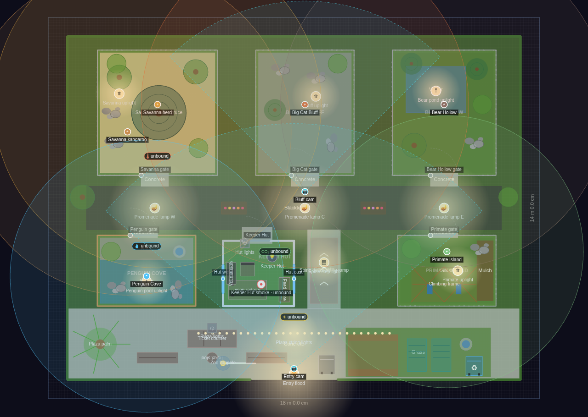
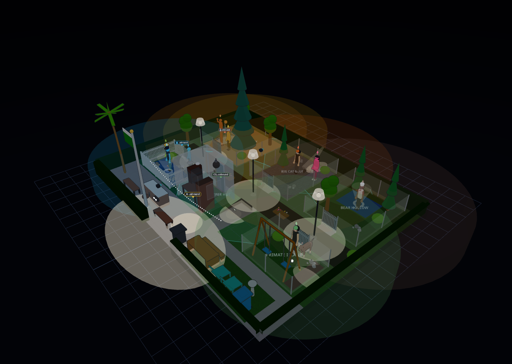
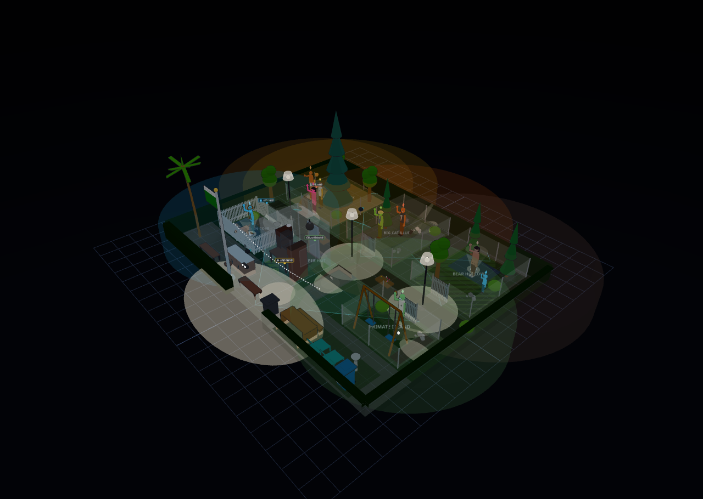

Pocket Zoo — Toon Safari
Explore it live above, or import the JSON in Diorama under Settings ▸ Data ▸ Configurations ▸ Import.
252 m² lot (18 × 14 m) · 1 floor · 5 fenced enclosures + keeper hut · mostly outdoor
A pocket zoo built to show off two things at once: outdoor authoring (fences,
gates, ground paint, yard objects) and CONFINED demo avatars. Each enclosure is a
closed fence loop, which makes it a real wall loop and therefore a real Room; a
demo motion sensor dropped inside that loop projects an always-on AI animal that
the renderer hard-confines to its home room — so the lion stays on the bluff and
the penguin stays in the cove, with no scripting at all. Visitors are free-range
roamers who follow the paths (and, being visitors, occasionally let themselves
through a keeper gate). Because most pens carry a POOL of two or three species,
each respawn re-rolls which animal is out that day.
LAYOUT — a concrete entry plaza runs the full width of the south edge: ticket
counter and stool, benches, bins, a flagpole, and a picnic lawn at the east end.
A blacktop promenade crosses the middle of the lot with concrete spurs branching
to every gate, and a north–south spine links the plaza to the promenade. The
perimeter is a clipped hedge, left OPEN at the entry.
ENCLOSURES (each fenced, gated and habitat-painted):
• Savanna Paddock — chain-link over sand, acacias and rock outcrops. A giraffe /
zebra / elephant herd plus a resident kangaroo (two sensors, two animals).
• Big Cat Bluff — chain-link over rock, boulder stacks and a pine. Lion / tiger.
• Bear Hollow — chain-link over grass with a spring-fed pond and two pines.
Bear / panda.
• Penguin Cove — picket fence around a big pool with a rock haul-out ledge and a
bird bath. Penguin / hippo.
• Primate Island — chain-link over grass with a climbing frame and a mulch
border. Monkey / gorilla.
KEEPER HUT — the only enclosed building: desk and chair, a feed-store cabinet, vet
manuals on a shelf, windows east and west onto the service alleys, a CO₂ probe and
a smoke detector.
FIXTURES — everything is UNBOUND, so the plan demos with no Home Assistant: an
entry floodlight, plaza string lights, three promenade lamp posts, ground-spot and
in-ground uplights on the habitats, a step light on the spine, temperature /
humidity / CO₂ / lux env sensors, and two security cameras. The entry flagpole is
a custom object recipe (base + pole + gold finial + flag) carried in the config,
so the plan also exercises Store.customObjects.
AVATARS — every animal comes from the built-in base packs (Zoo Animals, Domestic
Animals), which ship loaded and active, so this plan needs no avatar-pack opt-in.
Grounds additions: a palm anchoring the entry plaza, a shade spruce in the savanna
browse lawn (the bulk-stone cluster shifted west to make room), and a step-free
ramp on the concrete spine between the plaza and the promenade.
Zoo Grounds
6 rooms · 252 m² footprint


Glass-house overview
